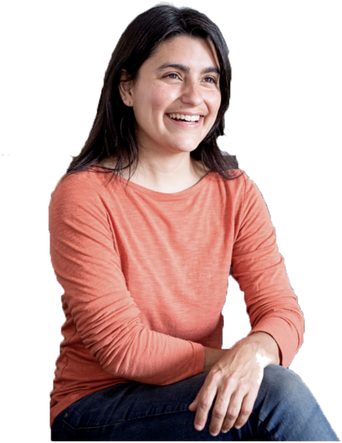

Acompañamiento personalizado y confidencial
COACHING ONTOLÓGICO PROFESIONAL
Transformá tus objetivos en acciones concretas.
Coaching ontológico profesional para quienes quieren avanzar con claridad en sus objetivos, decisiones y procesos de cambio.
Florencia Cernuschi · Coach Ontológica Profesional
Enfoque en objetivos claros y resultados concretos
Herramientas prácticas para tu día a día
Seguimiento y aprendizaje para que el cambio sea sostenible
PARA VOS
¿Sentís que querés avanzar, pero algo te está frenando?
Tenés un objetivo, pero no conseguís avanzar.
Querés hacer un cambio profesional y no sabés por dónde empezar.
Tenés muchas ideas y necesitás ordenar prioridades.
Estás atravesando una transición y necesitás tomar una decisión.
Querés emprender y transformar una idea en un proyecto concreto.
Sabés que algo tiene que cambiar, pero todavía no encontrás cómo.
El coaching puede ayudarte a mirar tu situación desde nuevas perspectivas, definir qué querés y diseñar acciones alineadas con tus objetivos.
ESPECIALIDADES
Áreas en las que puedo acompañarte
Coaching Ejecutivo
Desarrollo profesional, liderazgo, toma de decisiones y desafíos de gestión.
Coaching para Emprendedores
Foco, prioridades, objetivos, bloqueos y transformación de ideas en acción.
Coaching Vocacional
Exploración de posibilidades, transiciones y decisiones de carrera.
Coaching en Finanzas Personales
Objetivos, hábitos y conversaciones relacionadas con el dinero, trabajados desde el coaching.
No constituye asesoramiento financiero.
Liderazgo
Desarrollo de liderazgo, conversaciones, decisiones y crecimiento profesional.
MI METODOLOGÍA
Del objetivo a la acción.
Un proceso de coaching comienza donde estás hoy y busca abrir nuevas posibilidades para que puedas decidir y actuar de manera consciente.
-
1. Claridad
Comprender dónde estás y qué querés realmente.
-
2. Exploración
Identificar creencias, obstáculos, recursos y posibilidades.
-
3. Diseño
Definir objetivos y alternativas posibles.
-
4. Acción
Convertir decisiones en acciones concretas.
-
5. Aprendizaje
Revisar resultados, aprendizajes y próximos pasos.

SOBRE MÍ
Soy Florencia.
Soy Coach Ontológica Profesional y acompaño a personas, profesionales y emprendedores que están atravesando procesos de cambio, buscando claridad o queriendo transformar un objetivo en acción.
Mi recorrido profesional combina formación en coaching, liderazgo y desarrollo con experiencias diversas que me enseñaron que transformar una realidad requiere mucho más que saber qué queremos: requiere poder mirarla de otra manera, decidir y actuar.
Conocé mi historiaEXPERIENCIAS
Experiencias de personas que trabajaron conmigo
Llegué con muchas dudas sobre mi próximo paso profesional y pude ordenar lo que quería y convertirlo en un plan.
Me ayudó a ordenar mi proyecto, definir prioridades y pasar de la idea a la acción.
Las sesiones me dieron claridad y foco para tomar decisiones desde lo que realmente me importaba.
PRÓXIMO PASO
¿Querés empezar a trabajar en eso que hoy te está ocupando?
Podemos conversar sobre tu situación y evaluar si un proceso de coaching es adecuado para vos.
Recibí recursos y reflexiones para tu desarrollo profesional y personal.
Herramientas, artículos y ejercicios prácticos en tu correo.